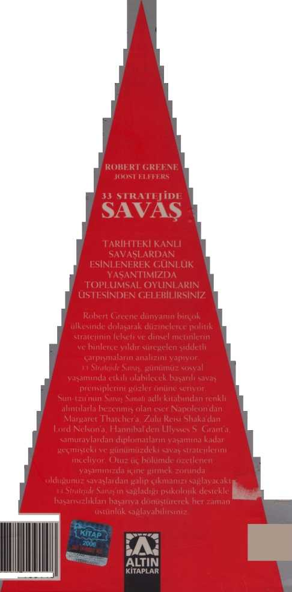

TERSİNE ÇEVİRMEK
Pasif saldırganlığın tersi, içinizde sakin kalırken, dostça davranmayı sürdürürken dışarıdan bakınca bir ifade takınmaktır. İşte bu saldırgan pasifliktir. Bunun amacı sindirmektir: belki de daha zayıf olduğunuzu bildiğiniz için güçlü gibi görünerek düşmanlarınızı saldırıdan caydırmaya çalışıyorsunuz. Görünümünüze kapılınca, sizin hiçbir şey yapmaya niyetli olmadığınıza inanmakta zorlanırlar. Genel olarak kendinizi gerçekten olduğunuzun tam tersi gibi göstermek, stratejinizi gizlemenin yararlı bir yoludur.
33
TEROR HAREKETLERİYLE BELİRSİZLİK VE PANİK YARATIN
Zincirleme Tepki Stratejisi
İnsanların direnç gösterme iradesini ve stratejik yanıt planlama becerisini yok etmenin en kesin yolu terör yaratmaktır. Bu güç, sürekli bir tehdit duygusu uyandıran ve korkusu tüm dünyaya yayılan bağlantısız şiddet hareketlerinden elde edilir. Bir terör kampanyasının hedefi savaş meydanında kazanılacak zafer değil, karşı tarafı aşırı tepki göstermeye itecek kadar kışkırtmak ve azami düzeyde kaos oluşturmaktır. Ayırt edilmeyecek biçimde halkın içine karışarak, hareketlerini medyada yankılanacak biçimde düzenleyerek, terör stratejisi uzmanları her an her yerde oldukları izlenimini yaratıp olduğundan daha güçlü görünmeyi sağlarlar. Bir çeşit sinir savaşıdır. Terör kurbanları korku ya da öfkeye kapılmamalı, dengelerine sahip olmalıdırlar. Bir terör kampanyası karşısında kişinin mantığı en sonuncu savunma hattıdır.
PANİĞİN ANATOMİSİ
On birinci yüzyılın sonlarına doğru İsfahan’da (günümüzde İran) dönemin büyük İslam imparatorluğunun yöneticisi Sultan Melik Şah’ın güçlü veziri Nizam ül-Mülk küçük ama tedirgin edici bir tehdidin farkına vardı. Ülkenin kuzeyinde Kuran ile mistikliğin birbirine karıştığı Nizari İsmailiye mezhebi mensupları yaşıyordu. Liderleri olan karizmatik Hasan Sabbah, imparatorluğun din ve siyaset üzerindeki sıkı denetimiyle dışlanmış olan binlerce kişiyi kendi mezhebine çekmişti. İsmailiyelilerin etkisi gitgide yayılıyordu ve Nizam ül-Mülk’ün rahatsız eden noktası ise hareketlerin büyük bir gizlilik içerisinde yürütülmesiydi. Üyeleri ibadetlerini gizli sürdürdüklerinden kimin bu mezhebe katıldığını bilmek olanaksızdı.
Vezir onların etkinliklerini elinden geldiğince gözlemliyordu ve günün birinde harekete geçmesini zorunlu kılan bir haber aldı. Anlaşılan yıllar içinde gizli İsmailiye mezhebine katılanlar önemli kalelere sızmayı başarmışlar ve sonunda Hasan Sabbah adına buraları ele geçirmişlerdi. Böylece imparatorluğun içinde adeta bağımsız bir devlet oluşturarak kuzey İran’ın bir bölümünün denetimini ellerine almışlardı. Nizam ül-Mülk iyi niyetli bir yöneticiydi ama İsmailiye gibi mezheplerin gelişmesinin tehlikelerini biliyordu. Bir isyanla yüze kalmaktansa, onları daha önceden sindirmek daha iyi olurdu. 1092 yılında kaleleri yıkıp Nizari İsmaili-yelilerini yok etmek için iki ordu göndermeye sultanı ikna etti.
"Kardeşler," diyor bir İsmailiyeli şair. " Zafer zamanı gelince, her iki dünyanın şansı bizim yanımızda olduğundan, bir tek yaya savaşçı, yüz binden fazla süvarisi olan bir krala karşı terör estirebilecektir."
THE ASSASSINS ADLI YAPITTANALINTI, BERNARD LEWİS, 1967
Kaleler büyük bir güçle korunduğu gibi çevredeki topraklar taraftarlarla dolmuştu. Savaş hareket edemez bir noktaya geldi ve sonunda sultanın orduları geri döndü. Nizam ül-Mülk’ün örneğin bölgeyi işgal edecek bir güç gibi başka bir çözüm bulması gerekiyordu. Ne var ki, birkaç ay sonra İsfahan’dan Tahran’a giderken yolculuk taptığı tahtırevana yaklaşan bir Sufi, giysilerinin arasına gizlediği hançeri çıkarıp veziri öldürdü. Katilin barışçıl bir Sufi gibi giyinmiş bir İsmailiycli olduğu ve kendisini yakalayanlara Hasan’ın bu görevi verdiğini itiraf ettiği açıklandı.
Nizam ül-Mülk’ün ölümünün ardından birkaç hafta sonra Melik Şah doğal nedenlerle yaşama veda etti. Her şart altında sultanın ölümü ülke için büyük bir darbeydi ama ardılına yol gösterecek becerikli veziri olmayınca imparatorluk uzun süreli bir kaosun içine düştü. 1105 yılında ülke biraz olsun istikrar kazanınca dikkatler yine İsmailiyelilere çevrildi. Bir tek cinayetle koskoca bir imparatorluğu titretmeyi başarmışlardı. Yok edilmeleri gerekiyordu. Bu mezhebe karşı yeni ve büyük bir sefer başlatıldı. Kısa bir süre sonra Nizam ül-Mülk’ün öldürülmesinin tek bir intikam olgusu değil, İsmailiyeli politikasının garip ve ürkütücü bir savaş yöntemi olduğu anlaşıldı. Birkaç yıl içinde yeni sultan Muhammed Tapar yönetiminin kilit adamları aynı yöntemle öldürüldü: kalabalığın arasından sıyrılan katil elindeki hançerle bir tek öldürücü darbe indirdi. Cinayetler genelinde gün ışığında, halkın gözü önünde işlendiği gibi bazen de evde çalışanların arasına karışmış olan bir İsmailiyeli, kurbanı geceleyin yatağında öldürüyordu.
Alıştığımız kayıplar bizleri daha az etkiler.
JUVENAL, MS 1-11. YY. ARASI
İmparatorluğun hiyerarşisi arasında bir korku dalgası yayılmaya başladı. Kimin İsmailiye mezhebine mensup olduğunu anlamak olanaksızdı: mezhep üyeleri sabırlı, disiplinli, inançlarını kendilerine saklama sanatını öğrenmiş, her yere uyum gösterebilen kişilerdi. Katillerin yakalanıp işkenceden geçirilmesinin yararı olmuyordu, sultanın yakın çevresindeki bazı kişileri İsmailiye mezhebinin gizli üyeleri olmakla ya da para karşılığında casusluk yapmakla suçluyorlardı. Gerçeği söyleyip söylemediklerinden kimse emin olamıyordu ama kuşkular herkesin üzerinde toplanıyordu.
Artık vezirler, hakimler, yerel yetkililer çevreleri muhafızlarla sarılı olarak yolculuk yapıyorlardı. Birçoğu kalın, rahatsız zırhlı gömlekler giymeye başlamıştı. Bazı kentlerde insanların özel izin almadan bir evden ötekine gidememesi yurttaşlar arasında huzursuzluğa neden olduğundan İsmailiyelilerin yeni yandaşlar bulması kolaylaşıyordu. İnsanlar geceleri rahat uyuyamıyor ya da en yakın dostlarına güvenemiyorlardı. Paranoyadan çıldırmış hale gelenler binbir türlü dedikodu yaymaya başlamışlardı. Hiyerarşinin içinde, Hasan Sabbah’a karşı sert bir yaklaşım sürdürülmesini isteyenlerle tek çözümün hoşgörü olduğunu iddia edenlerin arasında bölünmeler ortaya çıkmaya başlamıştı.
İmparatorluk İsmailiyelileri baskı altına almaya çabalarken, ara sıra işlenen cinayetler de sürüyordu. Aylarca kimse öldürülmüyor, ardından bir hafta içinde iki kişinin canına kıyılıyordu. Ne zaman olacağı ya da hangi üst düzey yetkilinin hedef alındığına dair hiçbir belirti ortaya çıkmıyordu. Yetkililer İsmailiyelilerin her adımını inceleyerek belirli bir düzenden söz ediyorlardı. Hiç farkına varmadan bu küçücük mezhep herkesin düşüncelerine hâkim olmaya başlamıştı.
1120 yılında Sultan Sencer harekete geçmeye, İsmailiye kalelerini alıp bölgeyi bir silahlı kampa çevirecek bir askeri operasyona karar verdi. Uyuyacağı yeri sürekli değiştirip yalnızca çok iyi tanıdıklarının yanına gelmesine izin vererek canına kast edilmesini engellemek için farklı önlemler aldı. Bireysel olarak kendini emniyete alınca, çevresindeki paniğin dışında kalabileceğine inandı.
Savaş hazırlıkları sürerken Hasan Sabbah, cinayetlere son verme pazarlığı için sultana bir dizi elçi gönderdi. Ama hepsi reddedildi. Artık olayların gidişi değişmişti, şimdi korkan taraf İsmailiyelilerdi.
Seferin başlatılmasından kısa bir süre önce sultan uyandığında yatağına, göğsünden bir metre kadar uzakta bir hançer saplanmış olduğunu gördü. Hançer buraya nasıl gelmişti? Ne demek istiyordu? Düşündükçe korkudan titremesi arttı; hançerin bir mesaj olduğu kesindi. Kime güveneceğini bilmediğinden bu olaydan hiç kimseye söz etmedi. Eşlerine karşı bile kuşku duyuyordu. Günün sonunda duygusal bir enkaz durumuna gelmişti. Aynı akşam Hasan’dan bir mesaj geldi: "Eğer sultana karşı niyetim iyi olmasaydı, hançer sert zemine değil, yumuşak göğsüne saplanmış olurdu."
Sencer artık bıkmıştı. Sürekli korkuya kapılarak, belirsizlik ve kuşkuyla adeta çıldırarak böyle bir gün daha geçirmek istemiyordu. Bu şeytanla pazarlık yapmanın daha iyi olacağını düşündü. Seferden vazgeçip Hasan ile barış yaptı.
Yıllar içinde İsmailiyelilerin siyasi gücü arttı ve mezhep Suriye’ye doğru genişleyince katiller adeta efsaneleşti. Hiçbiri kaçmamıştı. Cinayeti işledikten sonra yakalanıyor, İşkenceden geçiriliyor, öldürülüyorlardı ama yenileri ortaya çıkıyor ve hiçbir şey onları görevlerini yapmaktan alıkoyamıyor gibiydi. Davalarına sıkı sıkıya bağlı oldukları gibi adeta bedenlerini başka bir güç yönetir gibiydi. Uyuşturucu etkisiyle davranıyor gibi göründüklerinden bazıları onlara Arapça haşhaş sözcüğünden türetip Haşşaşi/er adını vermişlerdi. Kutsal Topraklar’a giden Avrupalı haçlılar şeytana benzeyen Haşşaşi/er hakkında duydukları öyküleri anlattıkça bu sözcük "assassin" (katil, suikastçı) biçimine dönüşüp Batı dillerine yerleşti.
Yolculuk boyunca Pisander ile diğerleri önceden kararlaştırıldığı gibi, Yunan kentlerindeki demokrasileri yıktılar. Bazı yerlerden kendi güçlerine katmak için ağır zırhlı piyade askerlerini aldılar ve Atina ’ya ulaştılar. Burada kendi demokrasi karşıtı parti üyeleri tarafından işin çoğunun halledilmiş olduğunu gördüler. Gençlerin bir kısmı aralarında bir grup kurup demokratik partinin önde gelen liderlerinden biri olan Androcles’i öldürmüşlerdi... İstenmeyen kişiler olarak düşündükleri başkaları da vardı ve onları da gizlice yok ettiler... Onların kalabalıklığını gören Atinalılar korktular ve kimse onlara karşı konuşmaya cesaret edemedi. Biri karşı çıkmaya kalkıştığında, öldürmek için uygun bir yol bulunuyordu ve hiç kimse bu cinayetleri soruşturmayı denemiyor ya da kuşkulandıklarına karşı harekete geçmiyordu. Tam tersine insanlar sessizliğe gömülmüş ve hiçbir şey söylememiş olsalar bile kendilerine dokunulmadığı için şanslı olduklarını düşünecek kadar korkuya kapılmışlardı. Devrimci partiyi gerçeğinden daha büyük olarak tahmin ediyorlardı; kentin büyüklüğü nedeniyle ve birbirleri hakkında yeterince bilgi sahibi olmadıklarından gerçeklere ulaşamadıkları için kendilerine güvenleri azalmıştı... Demokratik parti içinde insanlar birbirine kuşkuyla yaklaşıyor, herkes karşısındakinin olup bitenlerle bağlantısı olabileceğini düşünüyordu. PELOPONNESOSLU^^M. ATİNALILARIN SAVAŞI, THUKYDIDES,
MÖ 460-399
Yorum
Hasan Sabbah’ın bir tek hedefi vardı: İran’ın kuzeyinde kendi mezhebi için bir devlet kurmak ve İslam imparatorluğunu geliştirmek. Taraftarlarının sayısı oldukça az ve kendisine karşı toplanan güçler çok olduğundan daha fazlasını umut etmeden, siyasi güç için tarihin ilk organize terör kampanyası olan bir strateji geliştirmişti. Hasan’ın planı son derece basitti. İslam dünyasında saygınlık kazanan bir lidere fazla yetki verildiğinden ölümü kaosa yol açardı. Bunu bilen Hasan bu liderleri oldukça rastgele bir yolla öldürmeyi seçti. Yaptığı seçimlerin bir düzenini görebilmek olanaksızdı ve bir sonraki kurban olma olasılığı çoğu kişinin dayanamayacağı kadar tedirgin ediciydi. Aslında ellerindeki kaleler dışında İs-mailiye mezhebindekiler son derece zayıf ve kırılgandılar ama Hasan adamlarını büyük bir sabırla sultanın yönetiminin kalbine sızdırarak her an her yerde oldukları izlenimini yaratmayı başarmıştı. Yaşamı boyunca yalnızca elli cinayet kayıtlara geçmişti ama sanki çok büyük bir ordusu varmış gibi bu katiller aracılığıyla büyük bir siyasi güç kazanmıştı.
Böyle bir güç yalnızca bireylerin korkmasına yol açarak elde edilemezdi. Cinayetlerin tüm sosyal toplum üzerindeki etkisi daha önemliydi. Hiyerarşinin en zayıf yetkilileri paranoyaya kapılmışlar, dillendirdikleri kuşkular ve söylentilerle daha güçlü olanlara korkularını bulaştırmışlardı. Sonuçta bir dalga etkisi ortaya çıkıp tüm basamaklarda öfkeden teslimiyete kadar bir duygu yelpazesi oluşturmuştu. Böyle bir paniğe kapılan bir grup dengesini bulamadığından, en küçük bir dürtüyle düşebilir. Sonunda Sultan Sencer gibi en güçlü ve kararlı olanlar da aynı duygu seline kapılmıştı. Sencer’in güvenliğini sağlama girişimleri, kendini maruz bıraktığı zorlu yaşam biçimi bu paniğin etkisi altında olduğunu gösteriyordu. Toprağa saplanmış bir tek hançer onu aşağıya itmeye yetmişti.
Unutmayın ki, hepimiz çevremizdekilerin duygularına kapılma eğilimi gösteririz. Bir gruptan geçen ruhsal durumların bizi ne kadar derinden etkilediğini anlamak çok zordur. Bu nedenle terörün kullanımı çok etkili ve tehlikelidir: çok iyi zamanlanmış birkaç şiddet olayı ile bir avuç katil binbir çeşit belirsizlik ve yıkıcı düşünce yaratabilir. Hedef grubun en zayıf üyeleri en derin korkuya kapılacaklar ve yaydıkları kaygı ile söylentiler diğerlerini de etkileyecektir. Güçlüler belki teröre öfke şiddetle tepki gösterirler ama bu da onların panikten ne kadar etkilendiklerine işaret eder; strateji oluşturmak yerine tepki göstermek gücün değil, zayıflığın belirtisidir. Olağan koşullar altında korkuya kapılanlar zaman içinde, özellikle sakin duranların çevresinde bulundukları sürece dengelerini yeniden kazanırlar. Ne var ki, panikleyen bir grubun içinde bunun gerçekleşmesi neredeyse olanaksızdır. Halkın hayal gücü çılgınlaştıkça, katiller olduğundan daha büyük ve her an her yerde bulunuyormuş gibi görünürler. Hasan’ın kanıtladığı gibi bir avuç katil, grubun ruhsal durumuna çok iyi hesaplanmış birkaç darbe indirerek koskoca bir imparatorluğu rehin alabilir. Grubun liderleri ister teslim olarak ister stratejik olmayan kar-şı-saldırılar yaparak, bir kez duygusal çekime kapılınca terör kampanyası başarıya ulaşmış demektir.
Zafer öldürülenlerin değil, korkutulanların sayısıyla kazanılır.
Arap atasözü
SAVAŞIN ANAHTARI
Günlük yaşamımızda çok çeşitli korkularla yüz yüze kalırız. Bu korkular genelinde belirli bir şeylerle bağlantılıdır: biri bize zarar verebilir, belirli bir sorun ortaya çıkmaktadır, hastalık, hatta ölüm tehditi altında olabiliriz. Herhangi bir derin korkunun eşiğinde, başımıza gelebilecek en kötü şeyleri düşünürken, irademiz bir an için adeta felç olur. Eğer bu durum çok uzun ya da çok şiddetli olursa, yaşam dayanılmaz bir biçim alacağından, bu gibi düşüncelerden sıyrılmak ve korkularımızı yatıştırmak için yollar ararız. Belki sosyal rutinler, arkadaşlarla etkinlikler gibi günlük yaşamın akıl çelici yönlerine dalarız. Din ya da teknoloji ve bilime inanmak gibi farklı bir inanç sistemi de umut kaynağı olabilir. Bu inançlar ya da aklımızı çelenler üzerinde durduğumuz toprak biçimini alarak bizi dimdik tutar, korkunun getirdiği felçten sıyrılarak yürümemizi sağlar.
Ne var ki bazı koşullar altında bu toprak ayaklarımızın altından kayıp gider ve geriye kendimizi sağlam tutabileceğimiz bir şey kalmaz. Tarih boyunca büyük bir deprem, korkunç bir veba salgını, şiddetli bir iç savaş gibi belirli felaketler karşısında insanları saran bir cins deliliğin izini sürebiliriz. Böyle durumlarda bize en fazla sıkıntı veren şey yakın geçmişte yaşadığımız kötü olay değildir; her korkunç olguyu aşacak ve uyum sağlayacak çok büyük bir kapasitemiz vardır. Buna karşılık geleceğin belirsizliği, korkunç şeylerin olabileceği korkusu ve hiç tanımadığımız kadar büyük bir felaketle karşılaşabilme fikri sinirlerimizi altüst eder. Rutinler ya da dinsel inançlar bu gibi düşüncelerden sıyrılmamızı sağlamaz. Kronikleşen ve şiddeti artan korku, aklımızın mantıksız düşüncelerle dolmasına izin verir. Belirli korkularımız genelleşmeye başlar. Bir grubun içinde ise panik başgösterir.
Temelinde terör işte budur; olağan yollardan yönetemeyeceğimiz ya da sıyrılamayacağımız, bizi tümüyle sarmalayan bir korku. Belirsizlikler gitgide artmıştır, başımıza gelebilecek kötülükler çoğalmıştır.
Tepedeki altının anlamı şudur: Şokyıkıcılık getirir ve çevreye korkuyla gözümüzü dikip bakarız. İlerlemek talihsizliklere yol açar. Belki henüz kişinin bedenine dokunmamıştır bile ama önce komşusuna kadar ulaşmıştır. Suçlanacak bir şey yoktur. Kişinin dostlarının konuşacağı bir şey vardır. İçsel şok zirveye tırmanınca, kişinin düşünme ve açıklıkla görme yetisi kaybolur. Böyle bir şok durumunda elbette aklı başında hareket etmek olanaksızdır. Öyleyse en doğrusu, kendine hâkim oluncaya ve düzgün düşünmeye başlayıncaya kadar hareketsiz kalmaktır. Ama bir insan bunu ancak, çevresindekilerde felakete yolaçan etkilerini gördüğü halde bu çalkantıya kapılmadığı zaman yapabilir. Eğer olaydan kendini zamanında geri çekebilirse, hatalardan ve yaralanmalardan uzak kalır. Ama hiçbir uyarıya kulak vermeyen dostları kapıldıkları heyecan nedeniyle onun davranışından memnun olmayacaklardır. Ne var ki, kişinin bunu dikkate
almaması gerekir.
THE ICHING, ÇİN, MÖ VIII. YY.
İkinci Dünya Savaşı’nda Almanlar Londra’yı bombalarken psikologlar bombardımanın düzenli ve sık aralıklı olduğu takdirde kent halkının adeta duyarsızlaştığını, gürültüye, rahatsızlığa, katliama adeta alıştığını fark etmişlerdi. Ama bombardımanlar düzensiz ve rastgele olunca korku teröre dönüşmüştü. Bir sonraki bombanın ne zaman düşeceğini bilmeme korkusuyla başa çıkmak daha zordu.
Avantaj ararken her şeyin denenip sınanması savaş ve stratejinin yasasıdır. Grupların ve bireylerin üzerinde terörün inanılmaz gücü fark edilince, strateji olarak kullanmanın yolu bulunmuştur. İnsanlar kurnaz, becerikli ve kolayca uyum gösteren canlılardır. İradelerini felç etmenin ve düşünme kapasitelerini yok etmenin yolu bilinçli olarak belirsizlik, kargaşa ve başa çıkılamayan korku yaratmaktır.
Stratejik terör model oluşturacak yıkıcı hareketler biçimini alabilir. Bu sanatın ustaları Moğollardı. Orada burada kentleri olabildiğince korkunç biçimde yerle bir ederlerdi. Moğol ordularının dehşete düşürücü efsaneleri hızla yayılmıştı. Ordu bir kente yaklaşırken paniğe kapılan halk ancak en kötüsünün yaşanacağını düşünür olmuştu. Çoğunlukla Moğolların amacına uygun olarak direniş göstermeden teslim oluyorlardı. Evlerinden çok uzaktaki oldukça küçük bir orduyla uzun kuşatmaları ve uzayıp giden savaşları göze alamazlardı.
Stratejik terör, bir grubu ya da bir ulusu bir arada tutmak için siyasi amaçlı olarak da kullanılabilir. 1792 yılında Fransız Devrimi kontrolden çıkmak üzereydi. Yabancı ordular ülkeyi işgal etmeye hazırlanırken, Fransa umarsızca bölünmüştü. Robespierre’in önderliğindeki radikaller ılımlılara karşı bir savaş başlatarak bu tehditle yüzleştiler ve devrimin Terör Dönemi yaşandı. Devrim karşıtlığı suçlamasıyla binlerce insan giyotine gönderildi. Sıradakinin kim olacağını kimse bilmiyordu. Gerçi radikallerin sayısı azdı ama böylesine büyük bir korku ve belirsizlik yaratarak karşı tarafın iradesini yok etmişlerdi. "Terörizm" ve "terörist" sözcüklerinin ilk kez kayıtlara geçtiği, Terör Dönemi çelişkili bir biçimde istikrar yarattı.
Gerçi strateji olarak terör büyük ordular ya da devletler tarafından uygulanabilir ama küçük gruplarca kullanılması daha etkilidir. Bunun nedeni basittir: terör hareketleri genelinde stratejik amaçlı ya da büyük bir dava adına masum sivillerin öldürülmesine gönüllü olmaya dayalıdır. Yüzyıllar boyunca Moğollar gibi birkaç örneğin dışında, askeri liderler bu kadar ileri gitmeye gönüllü olmamışlardı. Kendi halkı üzerinde kitlesel terör uygulamaya kalkışan bir devlet, şeytanları ortaya çıkartıp kontrol edemeyeceği bir kaos yaratır. Ama küçük grupların böyle sorunları yoktur. Sayıları çok az olduğundan geleneksel bir savaş, hatta bir gerilla savaşı bile açamazlar. Stratejilerinin son noktası terördür. Çok büyük bir düşmanın üzerine gittiklerinden genelinde umarsızdırlar ve yürekten bağlı oldukları bir davaları vardır. Bununla kıyaslanınca etik kaygılar silinip gider. Kaos yaratmak ise stratejinin bir parçasıdır.
Moğol savaşının temeli saf terördü. Katliam, yağma, işkence, zorunlu ya da pazarlık sonucu yenilginin bedeliydi... Kurbanın direncini kırmak için tüm terör unsurları acımasızca kullanılırdı ve bu "dehşet" politikası kısa vadeli kazançlar sağlıyordu. Moğol tümenlerinin geldiğini duyan koskoca orduların korku dolu parçalara ayrıldığı bilinirdi... Daha Moğol ordusu sınırlarından içeri girmeden önce düşmanlar adeta felce uğrardı.
THE ART OF ON ^LAND, DAVID CHANDLER, 1974
Kılıç, bıçak, tabanca yalnızca bireysel ölüm araçları olduğundan yüzyıllar boyunca terörizm sınırlı kalmıştı. Ardından on dokuzuncu yüzyılda tek bir radikal yenilik bugün bildiğimiz terörün doğumuna yol açtı.
1870’lerin sonuna doğru, aydın sınıfa mensup bir grup Rus radikal, köylülerin önderliğinde devrim için kaynaşmaktaydı. Sonunda bu davanın umutsuz olduğuna karar verdiler: köylüler böyle bir harekete kalkışacak kadar hazırlıklı olmadığı gibi çarlık rejimi ve rejimin baskıcı unsurları başa çıkılmayacak kadar güçlüydü. Çar II. Alexander her tür bölücülük üzerine acımasız bir darbe indirecek olan Beyaz Terör adıyla bilinen bir girişim başlatmıştı. Radikallerin bırakın etkilerini genişletmeyi, açıkça hareket edecek durumları bile yoktu. Ama eğer hiçbir şey yapmazlarsa, çarın gücü gitgide büyüyecekti.
Bu radikallerin arasından bir terör savaşı açacak bir grup ortaya çıktı. Kendilerine Narodnaya Volia ya da "Halkın İradesi" adını verdiler. Organizasyonu gizli tutabilmek için sayıyı arttırmadılar. Göze çarpmayacak gibi giyinip halkın arasına karıştılar. Ve bomba üretmeye başladılar. Hükümetin bakanlarından birkaç tanesi öldürülünce çar, adeta sarayında tutuklu kaldı. Teröristleri avlama arzusuyla yanıp tutuşarak tüm enerjisi-ni bu hedefe yönlendirdi ve sonucunda yönetiminde işlev bozukluğu görüldü.
1880’de radikaller, çarın St. Petersburg’daki Kı§ Sarayı’nda bir bomba patlattılar. Ertesi yıl patlayan bomba ise Alexander’in ölümüne yol açtı. Hükümet var olan baskı politikasından daha ağır güçle karşılık verip adeta bir polis devleti oluşturdu. Buna karşın 1888’de Vladimir Lenin’in kardeşi ve Narodnaya Volia grubunun üyesi olan Alexander Ulianov, Çar II. Alexander’ın ardılı olan III. Alexander’ı neredeyse öldürmeyi başarıyordu.
Ulianov’un yakalanıp idam edilmesi Narodnaya Volia grubunun hareketlerine son verdi ama sona ermeden önce uluslararası bir terör dalgası başlatmayı başardılar. Bu terör dalgası kapsamında, anarşistler Amerika başkanlarından James A. Garfield’i 1881 ve William McKinley’i 1901 tarihlerinde öldürdüler. Modern terörizmin tüm unsurları Narodnaya grubunda mevcuttu. Daha dramatik ve korkutucu olduğundan bombaları tabancalara tercih ediyorlardı. Yeterli sayıda bakanı öldürebildikleri takdirde çara kadar ulaşabileceklerini ve böylece rejimin çökeceğini ya da kendini savunmak için aşın uçlara kaçacağına inanıyorlardı. Baskıcı tepki ise uzun vadede teröristlerin işine yarayacak, neden olduğu huzursuzluk bir devrimin kıvılcımını ateşleyecekti. Bu arada bombalama olayları basında yankı bulunca, davaları dünyanın her tarafından sempatizan toplayacaktı. Bu olguya "hareketin propagandası" adını vermişlerdi.
Narodnaya Volia temelinde hükümeti hedef almıştı ama bu süreçte sivilleri öldürmekten de kaçınmıyordu. Çarlık yönetiminin düşmesinin bedeli birkaç can kaybına değerdi ve sonuçta bombalar, alternatifi olan bir iç savaştan daha az öldürücüydü. En azından Narodnaya Volia, Rus halkına hükümetin kendini göstermek istediği gibi dokunulmaz bir anıtsal güç olmadığım, kırılgan olduğunu kanıtlayacaktı. Grup üyeleri zaman içinde rejimin kendilerini yok edebileceğini biliyorlardı ama davaları uğruna ölmeye hazırdılar.
Narodnaya Volia grubu bir zincirleme tepki oluşturmak için bir tek bomba patlaması gibi ufak bir olgunun yeterli olduğunu görmüştü: yönetim kadrolarını korku sarınca ortaya çıkacak acımasız baskı, gruba reklam ve sempati toplayacağı gibi hükümetten hoşnutsuzluğu arttıracak; böylece radikalizm biraz daha yükselecek, elbette ardından baskı artacak ve sonunda tüm döngü bir kargaşa içinde çökecekti. Gerçi Narodnaya Volia küçük ve güçsüzdü ama dramatik şiddet hareketleri kaos ile belirsizlik yaratmak için orantısız bir güç kazanıp polislerin ve halkın gözünde çok güçlüymüş gibi bir izlenim yaratıyordu. Aslında grubun küçüklüğü ve göze çarpmaması büyük bir avantaj sağlıyordu; kolayca hareket eden, sürpriz unsuru taşıyan, gözle neredeyse görülmeyen minicik gizli bir grubu aramak için inanılmaz bir masrafa yol açarak binlerce polisten oluşan hantal bir emniyet gücü kullanılıyordu. Bu durum teröristlere kendilerini kurban kahramanlar gibi tanıtma fırsatı veriyor ve güçlerin orantısızlığı neredeyse savaşmayı olanaksız hale getiriyordu.
"Şunu denemelisin. Bir krala ya da devlet başkanma suikast girişimi yeterince sansasyon yaratır ama eskisi kadar ilgi uyandırmaz. Suikaste uğramak tüm devlet başkanlarının varlığının genel kavramına girmiştir. Bunca başkan öldürüldüğünden adeta gelenekselleşmiştir. Şimdi, örneğin bir kiliseye karşı yapılacak bir girişime bakalım. İlk bakışta hiç kuşkusuz korkunç gibi gelebilir ama sıradan akıllı birinin düşüneceği kadar etkili değildir. Başlangıçta devrimsel ve anarşist bir eylem gibi görünse de, böyle bir girişime dinsel bir gösteri özelliği katacak yeterince aptal vardır. Bu da, bu eyleme bizim katmak istediğimiz panik yaratıcı önemin yitirilmesine neden olur. Bir restoran ya da tiyatroda katliam yapma girişimi de siyasal yönü olmadığı, aç bir adamın sosyal intikamı gibi varsayılarak önemsiz kalır. Bunların hepsi kullanılmış olduğundan devrimsel anarşide bir ders yerine geçmez. Her gazetenin böyle gösterileri açıklamak için hazır tuttuğu tanımları vardır. Kendi görüşüme göre bomba atmanın felsefesinden sana
söz edeceğim; son on bir yıldır sen de bufelsefeye hizmet edermiş gibi görünüyorsun. Anlayabileceğinden dahafazlasını anlatmayacağım. Saldırdığın sınıfların duyarlılıkları yakında körelecektir. Onlar için mülk sahipliğiyıkılmazgibi görülmektedir. Onların acıma ya da korku duygularının üzerinde çok uzun süre oynayamazsın. Kamuoyunun fikrinde bir bombanın iz bırakması için intikam ya da terörizmin ötesine geçmesi gerekir. Yalnızca yıkmaya yönelik olmalıdır. Başka bir hedefi olduğundan kuşku duyulmamalıdır. Siz anarşistler, tüm sosyal toplumu temizlemeye hazır olduğunuzu açıkça belirtmelisiniz... Düşünülmeyecek, anlaşılmayacak, algılanmayacak kadar çılgınca bir yıkıcı gücün yarattığı dehşet karşısında insan ne söyleyebilir? Tehditler, ikna edici sözler ya da rüşvetlerle yatıştıramadığınız için, çılgınlık kendi başına dehşet vericidir. Üstelik ben uygar bir kişiyim. En iyi sonuçları beklesem bile seni böyle bir organize katliama yönlendirmeyi hayal bile edemem. Ama bir katliamdan istediğim sonuçları da bekleyemem. Cinayet daima bizim yanımızdadır.
Adeta bir kurumdur. Gösteri, öğrenmeye, bilime karşı olmalıdır. Ama bilimin her dalı hedef değildir. Saldırı, keyfi işlenen günahın anlamsızlığını
taşımalıdır..."
GİZLİ AJAN!, JOSEPH CONRAD, 1857-1924
Orantısızlık, savaşı en aşırı uca getirir: az sayıda insan büyük bir güce karşı savaşırken grubun küçüklüğünü ve umarsızlığını tehlikeli bir silah olarak kullanır. Tüm terör hareketlerinin sunduğu ikilem ve çok kişiyi yanına çekme nedeni teröristlerin karşılarındaki orduya oranla kaybedecek çok az şeyleri olması ve terör ile çok şey kazanacak olmalarıdır.
Narodnaya Volia gibi terörist grupların başarısız olacağı sıklıkla tartışılmıştır; ciddi bir baskıya davetiye çıkararak bu tehditle başa çıkmak için kayıtsız şartsız yetkisi olduğunu ileri süren otoritenin avucuna düşerler ve sonuçta hiçbir değişim getiremezler. Ne var ki bu sav, ana noktayı ıskalıyor ve terörizmi yanlış okuyor. Narodnaya Volia, milyonlarca Ru-sun bu davanın farkına varmasını sağlamıştır ve teknikleri tüm dünyada kopyalanmıştır. Çarlık rejimi, dengesi bozulduğundan mantıksız ve acımasız bir tepki ortaya koyarak kaynaklarını bu baskı için harcamak zorunda kalmış ve iktidarda kalına süresini uzatmak için uygulayabileceği reformları bu nedenle yapamamıştır. Üstelik ağır baskılar daha tehlikeli bir devrimci grup olan komünist hareketinin ortaya çıkmasına neden olmuştur.
Temelinde teröristler bir çığ yaratmak için bir kayaya tekme atarlar. Eğer heyelan oluşmazsa kendi yaşamları dışında pek bir şey kaybolmuş sayılmaz ve zaten dava uğruna kendilerini feda etmeye hazırdırlar. Eğer katliam ve kaos ortaya çıkarsa olayları etkileyecek güce sahip olurlar. Teröristler genelinde değişime giden tüm yolların tıkandığı aşırı durağan durumlara tepki gösterirler. Umarsızlıklarıyla çoğu zaman statükoyu kırabilirler.
Savaşı zafer ya da yenilginin kırmızı harfleriyle yargılamak hatadır, çünkü her ikisinin de grilikleri vardır. Tarihteki zaferlerin pek azı uzun süreli barış getirmiş, yenilgilerin pek azı kalıcı yıkıma neden olmuştur. Bir çeşit değişim getirmek, sınırlı bir hedefe ulaşmak özellikle başka türlü güce sahip olmayanlar için terörizmi çok çekici kılmaktadır.
Örneğin belirli davanın reklam edilmesi gibi sınırlı bir hedef için terör etkili biçimde kullanılabilir. Bu hedefe ulaşınca da, siyasal güce çevrilebilecek bir kamuoyu oluşturulabilir. Filistinli teröristler 1968 yılında El Al uçağını kaçırdığında, dünyanın tüm medyalarının dikkatini çekmişlerdi. İzleyen yıllarda aralarında 1972 Münih Olimpiyat Oyunları saldırısının da bulunduğu, televizyonlara yansıyan diğer terör olaylarını gerçekleştirmişlerdi. Gerçi bu girişimler Arap olmayan ülkelerin nefretini kazanmıştı ama davalarına dikkat çektiği ve bu ilginin getirdiği güce kavuşmalarını sağladığı için dünyanın duyduğu nefretle yaşamaya hazırdılar. Yazar Brian Jenkins, "On dört yıl boyunca kırsal gerilla taktikleri kullanan isyancılar Angola’da, Mozambik’de ve Portekiz Gine’sinde savaştılar. Bu girişimler ilgi çekmezken, aynı sayıdaki Filistinli komandoların uyguladığı terör taktikleri birkaç yılda dünyanın en birincil kaygısı olmalarına yol açtı," diye belirtiyor.
Değerini kamuoyunun saptadığı görünümlerin hüküm sürdüğü bir dünyada, terörizm tanınmaya giden en kısa yolu açar ve teröristler şiddeti medyaya özellikle televizyona göre düzenlerler. Göz ardı edilemeyecek kadar dehşet verici düzeye getirirler. Haberciler ve uzmanlar şoka uğradıklarını, tiksindiklerini ama çaresiz kaldıklarını itiraf ederler. Onların görevi haber vermektir ama temelinde fırsat tanıyarak teröristlere oluşturdukları virüsü yaymalarına yardımcı olurlar. Bu etki küçük ve güçsüz olanların gözünden kaçmaz ve yeni kuşaklar açısından terörizme sapkınca bir çekicilik kazandırır.
Yine de tüm gücüne karşın terörizmin sınırları birçok şiddet kampanyasının yok olmasını sağlamıştır ve terörizme karşı çıkanların bundan yararlanmasını bilirler. Stratejinin temel zayıflığı teröristlerin halkla ya da gerçek bir siyasi tabanla bağlantılarının olmayışıdır. Genelinde dışlanınca gerçeklerle bağları kopar, kendilerini olduğundan daha güçlü görürler ve aşırıya kaçarlar. Gerçi şiddet kullanımının başarıya ulaşması için stratejik olması gerekir ama halktan dışlanmak denge duygusunu korumalarını zorlaştırır. Narodnaya Volia üyeleri Rus köylüsünü anlamayı başarmışlardı ama ABD’deki Weathermen ve İtalya’daki Kızıl Tugaylar gibi daha yakın tarihli terör grupları halktan koptuklarından hayal dünyasında yaşamaktaydılar. Teröristlerin dışlandığını vurgulamak ve bir siyasi tabandan yararlanmalarını engellemek, onlara karşı kullanılacak stratejinin bir parçası olmalıdır.
Terörizm genelinde zayıflık ve umarsızlık duygularından doğar ve ister kamusal ister bireysel olsun savunulan davanın her tür acıyı vermeye değer olduğu fikrine dayanır. Güç kaynaklarının genelinde büyük ve görünürde yenilmez olduğu bir dünyada bu strateji daha çekici gelir. Bu anlamda terörizm toplumun içine sızabilen bir tarz, bir davranış biçimi halini alabilir.
1920’lerde ve 1930’larda Fransız psikanalist Jacques Lacan, neredeyse psikanaliz uygulamasının tüm alanlarına hükmeden tutucu tıp camialarıyla kafa kafaya çarpışmıştı. Bu otoritelerle geleneksel yollarla başa çıkmaya çabalamanın yararsızlığını fark eden Lacan, ancak terörizm olarak tanımlanabilecek bir tarz geliştirmişti. Örneğin hastalarıyla yaptığı seanslar her zamanki elli dakikalık süreyi tutmuyor; ancak onun istediği kadar, bazen en çok on dakika sürüyordu. Tıp dünyasına karşı bu bilinçli kışkırtma bir skan-dala neden olup toplumu yıllarca sarsan bir zincirleme tepkiye yol açtı. (Seansların ne zaman biteceğinden emin olmayan hastalar da korku içindeydi ve her anından yararlanmak için konsantre olmak zorundaydılar. Lacan’a göre bu davranışın tedavi edici niteliği vardı.) Bu yöntemle adını duyuran Lacan yeni tahriklerle kazanı sürekli kaynattı; kendine rakip okulun ve profesyonel camianın kurulmasına yol açtı. Yazdığı kitaplar da bu stratejiyle uyumlu olarak şiddet ve gizlilik içeriyordu. Adeta dünyaya ara sıra ufak bombalar atarak kazandığı ilgi ve yarattığı terörle besleniyordu.
Meiö döneminde (on beşinci yüzyılın sonu) Odawara Şatosu saldırganların eline düştüğünde, şatonun efendisi Mori Fujiyori ’nin hizmetinde olan Akiko adlı kadın yıllardır yanında bulunan kedisiyle birlikte kaçmayı başardı. Kedi olağanüstü güçlere sahip bir canavara dönüştü, insanlara korku saldı ve köyün çocuklarını taciz etmeye başladı. Yerel yetkililer kediyi yakalamaya çabalayan köylülere yardım ettiler ama kedi bir görünüp bir kaybolma gücüne sahip olduğundan kılıç ve ok ustaları bir hedef bulamadılar, köyün erkekleriyle kadınları gece gündüz korku içinde yaşadılar. İkinci Eishö yılının (1505) aralık ayında rahip Yakkoku, Hokokuji’deki kürsüye çıkıp bir kedi resmi çizdi ve cemaate şu sözlerle gösterdi: "Nasıl onun resmini çizdiysem, onu Katzu! ile öldüreceğim ve insanların yüreklerindeki korkuları yok edeceğim." Böyle haykırıp kedi resmini paramparça etti. Aynı gün Takuma villası yakınındaki vadide bir oduncu yukarıdan gelen korkunç, tiz bir çığlık duydu ve bir grup okçuyu vadinin üst tarafına götürdü. Bir ayı yavrusu büyüklüğündeki kedi-canavarı bir kayanın üzerinde ölü olarak buldular. İnsanlar ustanın Katzu’sunun bunu sağladığını kabul ettiler.
Sınav
(1) Katzu! ile bir kâğıdın yırtılması canlı bir canavarı nasılyok edebilir? (2) İblis-kedi şimdi insanların arasında dolaşıyor, büyülüyor ve öldürüyor.
Onu derhal bir Katzu! ile öldürün. Kanıtını gösterin!
SAMURA! ZEN: THE W;^MOR KOANS, TREVOR LEGGERTT, 1985
Kendini zayıf ve güçsüz hissedenler sık sık öfke ya da mantıksız davranış krizleri sergilemeye eğilim gösterirler ve bir sonraki saldırının zamanını tahmin edemeyen çevreleri kuşku içinde yaşar. Öfke krizleri tıpkı daha ciddi terör çeşitleri gibi hedefler üzerinde ürkütücü bir etki yaratır, direnme iradesini yok eder; bu tip kişilerle en yalın iletişim biçimleri böy-lesine sevimsiz olduğundan, niçin savaşmalı düşüncesi ortaya çıkar. Niçin teslim olmamalı? Şiddete yatkın bir karakter yapısı ya da ani ve şaşırtıcı tuhaf bir davranış da güç izlenimi yarattığından, gerçek zayıflığı ve özgü-vensizliği gizler. Bu davranışa duygusal ya da kontrolsüz bir tepki göstermek kişinin karşı tarafın avucuna düşmesine yol açarak istenen ilgi ve kaosun ortaya çıkmasına neden olur. Terörist bir eş ya da patronla başa çıkmak zorundaysanız, kararlı ama serinkanlı bir biçimde karşılık vermek en doğrusudur, çünkü bu tipler böyle bir yanıtı hiç beklemez.
Gerçi organize terör evrim geçirmiştir, teknolojik ilerleme şiddet kapasitesini arttırmıştır ama temel yapısı değişim göstermediğinden Narod-naya Volia’nın geliştirdiği unsurlar hâlâ etkilidir. Yine de günümüzde çoğu insan klasik tipini aşıp geçen daha yeni daha tehlikeli bir cins terörizmin gelişmekte olup olmadığını sormaktadır. Teröristler örneğin nükleer ya da biyolojik silahlara sahip olurlarsa ve bunları kullanmayı mideleri kaldırıyorsa, bu savaşın onlara kazandıracağı güç yepyeni bir biçim alacaktır. Ama belki de daha kötü sonuçlar açmak için kirli silahların tehdidine gerek duymayan yeni bir terör biçimi ortaya şimdiden çıkmıştır.
11 Eylül 2001 tarihinde İslami El Kaide örgütüyle bağlantılı olan bir avuç terörist, New York kentinde Dünya Ticaret Merkezi ve Washing-ton’daki Pentagon binasına yaptığı saldırıda şimdiye dek görülmüş en öldürücü hareketi gerçekleştirdi. Bu saldırı klasik terörizmin damgasını taşıyordu: kısıtlı kaynakları olan küçük bir grup ABD’nin teknolojisinden yararlanarak azami etkiyi yaratacak bir darbe indirmişti. Küçüklüğün değer kazandığı güç orantısızlığında, geniş toplum arasında göze çarpmamak fark edilmeyi zorlaştırmıştı. Bu olayın yarattığı korku, panik benzeri bir dizi tepkiyi harekete geçirdi ve ABD henüz bundan tümüyle sıyrıla-madı. İkiz Kuleler’in ve Pentagon’un simgeselliği son yıllarda dünyanın tek süpergücü olarak tanımlanan Amerika’nın kırılganlığını ortaya çıkarırken, teröristlere azami ölçüde tanınma fırsatı da verdi. Dünyanın dört-bir köşesindeki, Amerika’nın bu kadar kolayca ve ciddi olarak yara alamayacağına inananlar yanıldıklarını görmekten keyif aldılar.
Çoğu kişi 11 Eylül’ün yeni bir terör biçimi olduğunu yadsıyor. Kurbanların sayısı çok yüksek olduğundan nitel yerine nicel bir değişim gözlendiğinden kendini diğer saldırılardan ayırdığı söyleniyor. Klasik terörizmde olduğu gibi bu incelemeler El Kaide’nin sonunda başarısız olacağını da belirtiyor. ABD’nin Afganistan’daki karşı-saldırısı örgütün operasyon merkezini yok ettiği için artık teröristler Amerikan hükümetinin yıkılmaz iradesinin hedefi durumuna geldiler ve Irak’ın işgali bu bölgeyi terörizmden temizlemenin müthiş stratejisinin bir parçasıydı. Zincirleme tepkinin her zaman teröristlerin hedefi olduğunu göz önüne alarak bu saldırıya başka bir açıdan da bakmak gerekir.
11 Eylül saldırısının bütünsel ekonomik etkisini ölçmek çok zor ama saldırının dalgasal etkisi her türlü ölçüye göre inanılmaz ve yadsınmaz boyutlardadır. Güvenlik giderlerinin artışı, bu amaçla hazırlanan yeni hükümet programlarının giderleri, iki ayrı ülkenin İşgali için askeri harcamalar, (her zaman panik psikolojisine kolayca yenilen) borsalardaki düşüş etkisi ve sonucundaki tüketici güveninin yaralanması, seyahat, turizm gibi belirli alanların aldığı darbeler, bunların tümünün küresel ekonomi üzerindeki yankılarının hesaba katılması gerekir. Saldırının ayrıca siyasi etkileri de çok büyük oldu, daha doğrusu Amerika’nın 2002 ve 2004 seçimlerini yönlendirdiği söylenebilir. Zincirleme tepki sürdükçe Amerika ile Avrupalı müttefikleri arasında gitgide büyüyen bir sürtüşme başgös-terdi. (Terörizm şahinlerin ve güvercinlerin sıraya girdiği ittifaklarda ve kamuoyu görüşlerinde her zaman için bu tip ayrılıklar yaratmayı hedefler.) 11 Eylül saldırısı ülkemizin en belirleyici yönü olan sivil özgürlüklerin kısıtlanmasına yol açarak Amerikan yaşam biçimi üzerinde de kesin bir etki yaratmıştır. Gerçi bunu ölçmek olanaksızdır ama son olarak da toplum üstünde çöküntüye ve korkuya neden olduğu da bilinmektedir.
Bir kişi korku ve titreyişin ne olduğunu yüreğinde öğrendiği zaman, dış etkenlerin ürettiği teröre karşı güvenlik içinde olur. Bırakın gökgürültüsü çevresinde yüzlerce kilometreye yayılsın, o kişinin ruhu dingin ve saygılı olduğundan, kurban törenleri bölünmez. Bu ruh insanların liderlerini ve yöneticilerini canlandırmalı, çok derin içsel ciddiyet karşısında tüm dış teröristler zarar vermeden geçmelidir.
THE ICHING, ÇİN, MÖ VIII. YY.
El Kaide stratejistlerinin olanları amaçlayıp amaçlamadıklarını, hatta hayal edip etmediklerini asla öğrenemeyeceğiz. Ama yapısal olarak terörizm, zarların atışılmalıdır ve bir terörist her zaman en fazla etkiyi yaratmayı umut eder. Olabildiğince fazla kaos, belirsizlik ve panik yaratmak temel fikirdir. Bu anlamda 11 Eylül saldırısı büyük ölçüde başarılı olduğundan terörizmin aşırı sertliği açısından nitel bir aşama sayılır. Belki bir biyolojik ya da nükleer bomba kadar fiziksel hasar vermemiştir ama zaman içinde yankılanma etkisi daha önceki saldırıların önüne geçmiştir. Ve bu gücü değişen dünyadan elde etmiştir. Ticari, siyasi ya da kültürel açıdan yeni küresel dünyanın derin bağlantıları nedeniyle herhangi bir noktaya yapılacak tek bir saldırının oluşturacağı zincirleme tepkiyi daha önceki yılların teröristleri hayal bile edememişlerdir. Birbiriyle bağlantılı pazarların beslendiği açık sınırlar ve iletişim ağları dalga etkilerine karşı inanılmaz derecede kırılgandır. Bir zamanlar ancak bir grubu ya da bir kenti paniğe uğratan bir olgu artık medya tarafından da beslenerek tüm dünyaya yayılmaktadır.
El Kaide’nin ana amacı olan ABD’ni Ortadoğu’dan çıkartmayı ya da bir İslam devrimi başlatmayı gerçekleştiremediğinden 11 Eylül saldırısını başarısız olarak düşünmek bu örgütün stratejisini yanlış okumak ve geleneksel savaş standartlarıyla değerlendirmek demektir. Teröristlerin genelinde çok büyük bir hedefi vardır ama bir tek darbeyle ulaşma olasılığının çok düşük olduğunu bilirler. Zincirleme tepkiyi başlatmak için ellerinden geleni yaparlar. Onların düşmanı statükodur ve başarıları hareketlerinin yıllara yayılan etkisiyle ölçülür.
"Bana göre bu gizemin çözülemez gibi görünmesinin nedeni çözümün çok kolay olmasıdır; unsurlarının yapısının abartılı olmasından söz ediyorum. Polisler cinayetin bir amacı yok gibi göründüğünden şaşkına döndükleri gibi vahşetine de şaşırmışlardır... Belirsiz ile olağandışını birbirine karıştırmak gibi kaba ama yaygın bir hata yapmışlardır. Olağanlık düzeyinden farklılık gösterdiğinden gerçeği ararken bu şekilde algılanmaktadır. Şu anda üzerinde çalıştığımıza benzer araştırmalarda, "neler oldu" diye sormak yerine "daha önce görülmemiş olan neler oldu" diye sormak gerekir. Daha doğrusu benim sonuca, bu olayın çözümüne kolayca ulaşmış olmam, polislerin gözündeki çözülmezlik algısıyla doğru orantılıdır"
MORG SOKAĞI CİNAYETLERİ ADLI YAPITTA AUGUSTE DUPIN’İN SÖZLERİ, EDGAR ALLEN POE, 1809-1849
Klasik ya da ufukta beliren yeni terörizmle savaşırken askeri çözümlere başvurmak, şiddete karşı şiddetle savaşmak, yıkılmayacağınızı düşmana göstermek, bundan sonraki saldırılarının bedelinin daha ağır olacağını bildirmek, her zaman için kolay bir yol olmuştur. Buradaki sorun ise size oranla teröristlerin kaybedecek çok az şeyi bulunmasıdır. Bir kar-şı-saldırı onlara zarar verir ama caydırmaz; daha doğrusu cesaretlerini arttırır ve hatta yeni yandaşlar bulmalarını sağlar. Teröristler genelinde sizi yıkmak için yıllarını harcamaya hazırdırlar. Onlara dramatik bir kar-şı-saldırı düzenlemek yalnızca sabırsızlığınızı, bir an önce sonuç almak istediğinizi, duygusal tepkilere karşı olan kırılganlığınızı gösterir, ki bunlar gücün değil, zayıflığın işaretleridir.
Terörist stratejisinde güçlerin orantısızlığı nedeniyle genelinde askeri çözüm en az etkili olanıdır. Teröristler kolayca ele geçmez, çevreye yayılır, aralarında fiziksel değil, radikal ve fanatik fikirlerden dolayı bağlar bulunur. Fransızlara karşı terör hareketleri gerçekleştiren Alman milliyetçi gruplarıyla başa çıkmaya çabalarken hüsrana kapılan Napoleon Bo-naparte’ın dediği gibi: "Bir yandaş grubu top gülleleriyle yok edilemez."
Fransız yazar Raymond Aron, terörizmi, psikolojik etkisinin fiziksel darbesinden daha güçlü olan bir şiddet hareketi olarak tanımlıyor. Ne var ki, bu psikolojik etki panik, kaos, siyasi bölünme gibi fiziksel olgulara yol açtığından teröristlerin çok daha güçlü görünmesine neden olur. Etkili bir karşı strateji hazırlarken bu noktanın dikkate alınması gerekir. Bir terörist saldırının ardından en önemli konu psikolojik dalga etkisini durdurmaktır. Ve bu çaba saldırı altındaki grubun ya da ülkenin lider kadrosundan başlamalıdır.
Poker ve benzeri oyunlarda olduğu gibi, en az riskle enfazla kazancı elde etmenin simgesel hesaplama fikrini artık düşünemeyiz. Manhattan’a saldırırken teröristler tam olarak bunu elde etmişlerdir ve bu durum kaos kuramını çok güzel bir biçimde betimlemektedir: ilk şok kesinlikle hesaplanamayan sonuçlar doğurur.
THE SPIRJT OF TERRORJSM, JEAN BAUDRILLARD, 2002
1944 yılında İkinci Dünya Savaşı’nın sonuna doğru Londra, Alman V-1 ve V-2 roketlerinin korkunç saldırısı altındaydı. Umarsızlığa kapılan Hitler ülke içinde bir bölünmeye yol açıp İngiliz halkını savaş edemeyecek duruma getirmeyi umuyordu. Altı binden fazla kişi öldü, yaralı sayısı çok daha fazla oldu, milyonlarca ev yok edildi. Başbakan Winston Churchill umutsuzluk ve kaygının yerleşmesine izin vermeyip bombardımanı İngiliz halkını bir araya getirmek için bir fırsat olarak gördü. Konuşmalarını ve politikasını panik ile kaygıyı uzaklaştırmaya yöneltti. Dikkatleri V-1 ya da daha çok korkulan V-2 roketlerine çekmek yerine, kararlı olmayı vurguladı. İngilizler böyle bir terör hareketi karşısında boyun eğdiklerini asla Almanlara göstermeyeceklerdi.
1961 yılında Fransız Cumhurbaşkanı Charles de Gaulle, sömürgesi olan Cezayir’e bağımsızlığını vermek istediğinde bu ülkedeki sağ kanat Fransız askerlerinin terör kampanyasıyla yüz yüze kalınca benzer bir strateji uyguladı. Televizyona çıkıp Fransa’nın böyle bir kampanyaya teslim olmayacağını, kısa bir süre önce yaşanan İkinci Dünya Savaşı ile kıyaslanınca şimdiki can kaybının çok az olduğunu, teröristlerin sayısının yüksek olmadığını ve onları yenilgiye uğratmak için Fransa halkının paniğe kapılmak yerine birleşmesi gerektiğini söyledi. Her iki olguda da liderler kendini tehdit altında hisseden ve bu duygusu medya tarafından körüklenen halkları üzerinde sakinleştirici bir etki yaratabilmişlerdi. Churchill de, de Gaulle de tehdidin gerçek olduğunu biliyorlar, gerekli güvenlik önlemlerini alıyorlardı ama en önemli nokta kamuoyunun duygularını korkudan uzaklaştırıp olumlu bir yöne sevk etmekti. Liderler bu saldırıları bölünmüş bir toplumu bir araya getirmek için kullandılar; kutuplaştırma her zaman teröristlerin amacı olduğundan bu konu çok önemlidir. Dramatik bir karşı-saldırı başlatmak yerine de Gaulle ile Churchill halklarını kendi stratejik düşünme biçimine kattılar, yurttaşlığın yıkıcı güçlere karşı verilen savaşın aktif bir parçası olduğunu bildirdiler.
Genel olarak alışılmamış tahriklere verilecek en etkili yanıt, olabildiğince az karşılık vermek ve bu davranışı bu arenaya kurnazlıkla yerleştirebilmektir. Zarar vermeyin. Kendinize hâkim olun, çok yerine az tepki gösterin. Bu fikirler bir an önce sonuca ulaşmak için olabildiğince fazla güçle yanıt vermek isteyen Amerikalılara hiç de uygun değildir. Washington’daki sorumluların algılarında biraz değişiklik yapmak ve azın aslındafazla olduğunu, başkalarının bize benzemediğini, düzgün ve düzenli bir dünya oluşturmak için bu bedeli ödemeye değmediğini anlatmak gerekir.
DRAGONWARS, J. BOWYER BELL, 1999
Bir saldırının psikolojik hasarını durdurmak için çabalarken, liderin görevi bir sonraki saldırıyı engellemek için elinden geleni yapmaktır. Teröristlerin genelinde belirli bir düzene uymadan ani saldırı düzenlemelerinin nedeni tahmin edilmeyenin daha fazla korkutucu olmasının yanı sıra sürekli bir çaba gösteremeyecek kadar zayıf olmalarıdır. Terörist tehlikeyi yok etmek için sabırlı olmak gerekir. Bu noktada sağlam istihbarat, askeri güçten daha değerlidir, düşman saflarına sızmak (içeride hoşnut olmayanları bulmak) ve teröristlerin dayandığı para ile diğer kaynakları ağır ağır kurutmak önemlidir.
Aynı zamanda ahlaksal yükseltileri işgal etmek gerekir. Saldırının kurbanı olarak bu noktada avantajlı olursunuz ama şiddetli bir karşı-saldırı düzenleyince bu avantajı yitirirsiniz. Yükseltiler önemsiz bir lüks değil, yaşamsal öneme sahip bir stratejik hiledir: teröristleri yalnızlaştırma, bölücülüğü engelleme çabalarında dünyanın görüşü ve diğer uluslarla ittifak yapmak çok önemli olacaktır. Bunun başarılması için savaşı yıllara yaymayı ve genelinde perde arkasında çalışmayı göze almak gereklidir. Sabırlı kararlılık ve aşırı tepki göstermeyi reddetmek kendi başına caydırıcı olacaktır. Kararlı olduğunuzu gösterin ve düşmanlarınızın bunu hissetmesini sağlayın; bir güç işareti olmadığından siyasi amaçlı yaygaracı bir cephe kullanmak yerine onları köşeye kıstırmak için serinkanlı ve içten pazarlıklı stratejiler uygulayacağınızı gösterin.
Terörizmin gerçek gücü, tersine çevirmelerin denetlenemeyen zincirleme tepkisinde yatar. Bu güç yaşanan olaylarda ve olayların ardından gelen ekonomik, siyasi gerileme etkilerinde olduğu kadar sonucundaki psikolojik gerilemede, toplumun değer yargısı sistemindeki gerilemede, hareket özgürlüğü ideolojisindeki gerilemede de daha belirsizce ortaya çıkar. Bunların tümü Batı dünyasının, geri kalan dünya üzerindeki gücünün kaynağını oluşturmaktadır. Görece yeni olan özgürlük fikri, geleneklerimizden ve vicdanlarımızdan kaybolma sürecindedir; liberal değerlerin küreselleşmesi ise kendini, emniyet güçlerinin küreselleşmesi, bütünsel kontrol, teröre karşı güvenlik önlemleri gibi tümüyle ters bir biçimde gösterecektir. Bu tersine çevrilme, kısıtlamaların azamiye çıkarılmasına doğru gidip aşırı tutucu bir toplumla benzerlik gösterecektir. THE SPIRJT OF TEmOmSM, JEAN BAUDRILLARD, 2002
Açık sınırlarla birbirine bağlanan ve buna dayanan bir dünyada asla kusursuz bir güvenlik olmayacaktır. Sorulması gereken soru, ne dereceye kadar tehditle yaşamayı göze alıyoruz biçimindedir. Güçlü olanlar güvensizliğin belirli, kabul edilebilir düzeyleriyle başa çıkabilirler. Panik ve histeri duyguları düşmanın nereye kadar başarılı olduğuna işaret ettiği gibi, aşırı katı bir savunma bir avuç dolusu insana, bir toplumun ve kültürün rehin düşmesine neden olur.
Simge: Denizaltındaki deprem dalgası. Denizin uzaklarında deprem, yanardağ, heyelan gibi bir olgu suları kaynatır. Birkaç santimlik bir dalga yayılmaya başlayarak gitgide büyür, suyun derinliğinden ivme kazanır ve inanılmaz bir yıkıcı güçle karaya vurur.
Otorite: Sürekli olarak kendini savunma durumunda bulunmaktan daha kötü bir kader yoktur, çünkü her an korku içinde olduğunuzu gösterir. —Julius Caesar (MÖ 100-44)
TERSİNE ÇEVİRMEK
Terörizmin tersi doğrudan ve simetrik bir savaştır; savaşların kaynağına geri dönüştür; gücün karşı güçle sınandığı dürüst, ön cephede sürdürülen bir savaştır ve temelinde modern çağlar için geri kalmış, yararsız bir stratejidir.
SON
n». L
9 789752 109148

1 Düşmanlarınıza Savaş Açın: Kutupsallık Stratejisi 2 Eski Savaşları Tekrarlamayın: Aklın Gerilla Savaşı Stratejisi 3 Olayların Çalkantısında Soğukkanlılığınızı Yitirmeyin; Karşı-Denge Stratejisi 4 Zorunluluk ve Umarsızlık Duygusu Yaratın: Ölüm Tarlası Stratejisi 5 Kümesel Düşünme Tuzağından Kaçının: Komut ve De netim Stratejisi 6 Güçlerinizi Ayırın: Denetimli Kaos Stratejisi 7 Savaşınızı Bir Haçlı Seferine Çevirin: Moral Stratejileri 8 Çarpışmalan Özenle Seçin: Kusursuz Ekonomi Stratejisi 9 Olayları Tersine Çevirin Karşı Saldırı Stratejisi 10 Tehdit Unsuru Oluşturun: Caydırma Stratejileri 11 Zaman/Mekân Takası: Sıcak Savaşsız Strateji 12 Çarpışmaları Kaybedin ama Savaşı Kazanın: Müthiş Strateji 13 Düşmanınızı Ta nıyın: İstihbarat Stratejisi
14 Direnişi Hızlı ve Ani Hareketle Yok Edin: Yıl dınm Harekâtı Stratejisi
15 Dinamikleri Denet leyin: Zorlayıcı Stratejiler 16 En Fazla Acı Veren Noktaya Vu itin: Ağırlık Merkezi Stratejisi 17 On lan Parçalayarak Yenin: Böl ve Fethet Stratejisi 18 Rakibinizin Yumuşak Karnını Ortaya
ISBN 978-975-21-0914-8
Çıkarın ve Vurun: Döndürme Stratejisi I9 Düşmanı Çembere Alın: İmha Etme Stratejisi 21' Zayıf Düşmeye Yönlendirin: Biçilecek Kadar OlgunlaştırmaStratejisi 2 1 İlerlerken Pazarlık Yapın: Diplomatik Savaş Stratejisi 22 İşleri Nasıl Sonlan-dıracağınızı Bilin: Çıkış Stratejisi 23 Gerçekleri ve Kurguları Ayrılmayacak Biçimde Dokuyun: Yanlış Algı Stratejisi 24 Hiç Beklenmedik Yolu Seçin: Sıradan-Sıradışı Strateji 25 Ahlaksal Yükseltileri İşgal Edin: Doğruluk Stratejisi 26 Hedeflerini Yok Edin: Boşluk Stratejisi 27 Kendi Çıkarlarınızı İleri Götürürken Başkalarının Çıkarları için Çalışıyormuş Gibi Görünün: İttifak Stratejisi 28 Rakiplerinize Kendilerini Asmaları için Yeterli İp Verin: Üstünlük Sağlama Stratejisi 29 Ufak Lokmalar Alın: Oldubitti Stratejisi 30 Akıllarına Girin: İletişim Stratejileri 31 İçeriden Yıkmak: İç Cephe Stratejisi 32 Boyun Eğer Gibi Görünüp Baskı Altına Alın: Pasif Saldırganlık Stratejisi 33 Terör Hareketleriyle Belirsizlik ve Panik Yaratın: Zin-ck -me Tepki St ıtejisi